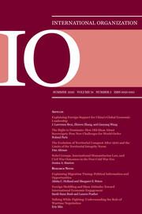
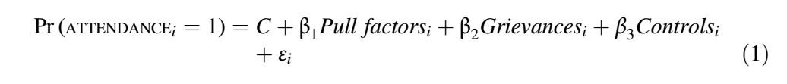
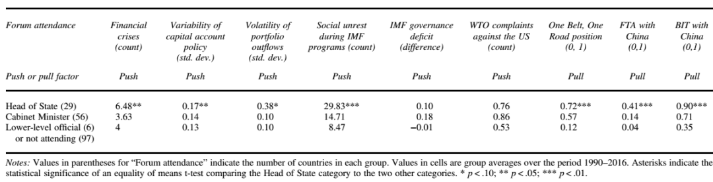
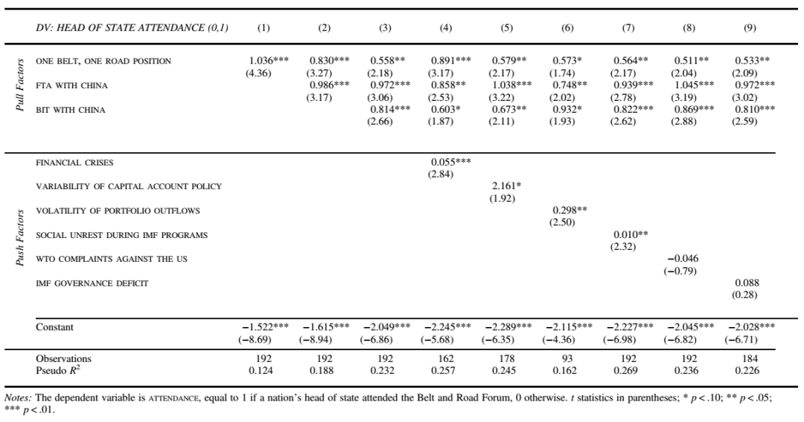
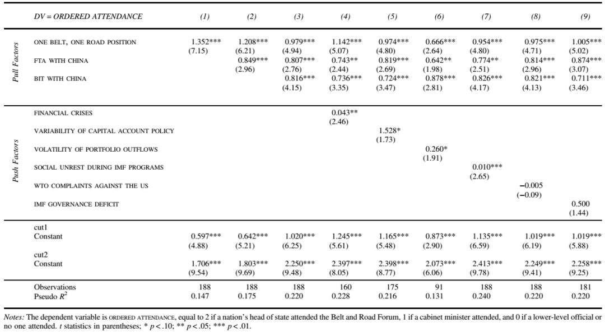
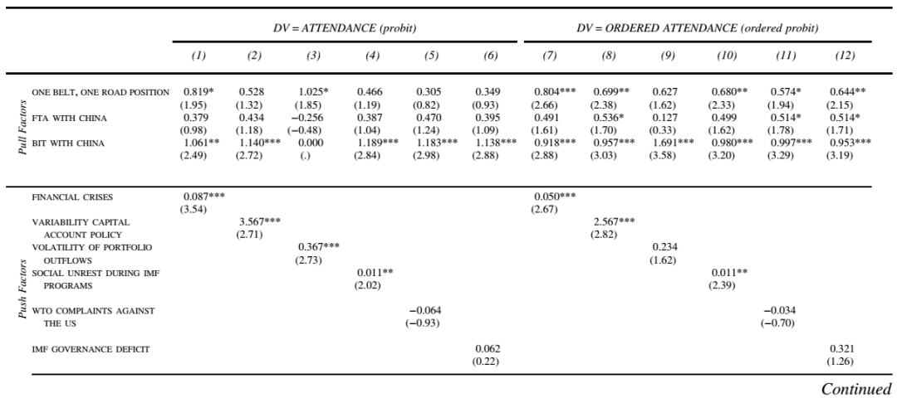
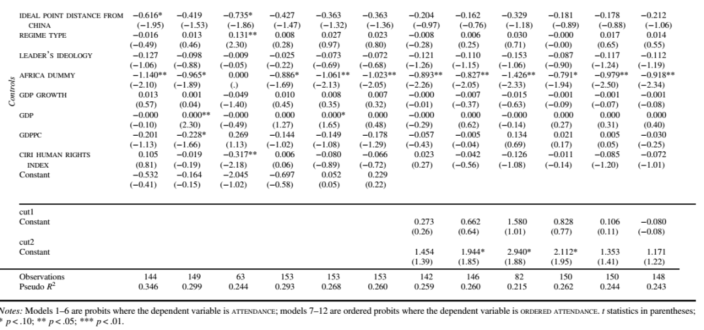
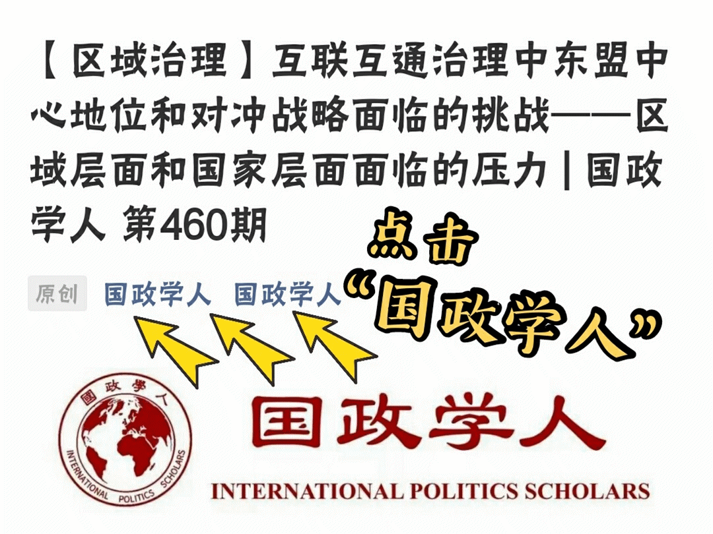
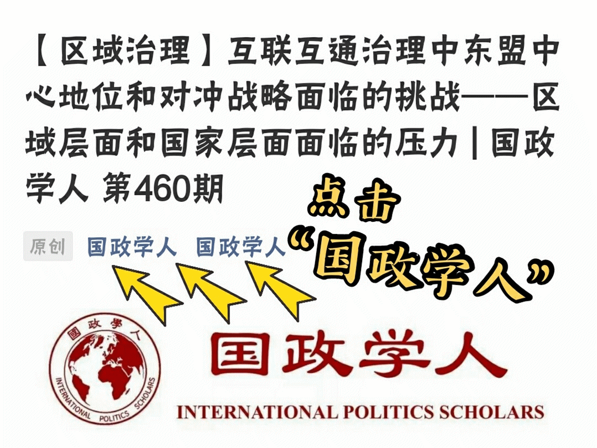

收录于合集

作品简介
【作者】 J. Lawrence Broz，加利福尼亚大学圣迭戈分校政治科学教授，主要研究方向为政治经济学、国际组织、贸易政治和全球金融关系，其研究成果陆续刊载于American Journal of Political Science, the Annual Review of Political Science, Economics and Politics, Explorations in Economic History, International Organization与 the Review of International Organizations。
张志文（Zhiwen Zhang），中山大学国际关系学院副教授，长期致力于国际政治经济学、国际金融和中美贸易等方面的研究，在International Organization (SSCI, LEAD ARTICLE)、Economic Modelling (SSCI)、The Singapore Economic Review（SSCI, LEAD RESEARCH PAPER）、《经济研究》和《国际金融研究》等国内外国际关系学、经济学、金融学权威期刊上发表论文十余篇，在中国金融出版社出版个人学术专著1部。
王高阳（Gaoyang Wang），中山大学国际关系学院特聘副研究员，研究领域为国际关系理论、东亚国际关系及国际政治经济学。
【编译】 阮辰阳（复旦大学国际政治系本科生）
【校对】 石雨宸
【审核】 李思
【排版】 张湘苹
【美编 】游钜家
【来源】 Broz, J. Lawrence, Zhiwen Zhang, and Gaoyang Wang. “Explaining Foreign Support for China’s Global Economic Leadership.” International Organization 74.3 (2020) : 417-452.
【归档】 《国际关系前沿》2021年第1期，总第28期。
期刊简介

《国际组织》（International Organization），简称“IO”，是一份经过同行评议的季刊，涵盖国际事务的领域包括：外交政策、国际关系、国际与比较政治经济学、安全政策、环境争端与解决、欧洲一体化、联盟模式与战争、谈判与冲突解决、经济发展与调整、国际资本流动等。它成立于1947年，由剑桥大学出版社代表国际组织基金会出版，主编是乔治城大学的Erik Voeten。根据Journal Citation Reports显示，2019年其影响因子为5，在95种国际关系期刊中排名第2。
解读中国全球经济领导权的国际支持
Explaining Foreign Support for China’s Global Economic Leadership
J. Lawrence Broz
张志文
王高阳
内容提要
本文主要分析了提升中国全球经济领导力的影响因素，重点关注各国对当下国际秩序的不满是如何推动它们支持中国的领导。作者指出，当下对国际金融震荡的不满使各国考虑转而支持中国领导。定量研究结果表明，经历的金融危机越多、资本账户管理政策越多变、短期资本流出波动性越大、IMF救援计划实施期间社会越不稳定的国家更倾向于支持中国的全球经济领导权。相较而言，本研究没有发现对全球治理或美国歧视性贸易政策的不满与外国对中国全球经济领导权的支持之间存在统计上显著的关系。总的来讲，该研究的实证结果与现有关于各国领导人想要改革和保留WTO和IMF这两个最重要的全球贸易和国际金融机构的流行观点相一致。与此同时，在全球资本流动方面，他们又有动力跟从中国对全球经济的领导，强调长期的基础设施和开发性金融胜于现有经济秩序下造成极大负面影响的短期资本流动。
文章导读
本文分析的是提升各国对中国的国际经济领导的认同之因素。流行观点认为，中国作为崛起的潜在领导国可以通过提供经济利益吸引他国追随（ 拉力因素 ）。然而本研究发现，来自中国的贸易和投资等方面的经济利益的吸引固然重要，但各国长期以来累积的对全球金融不稳定的不满是更为重要的 推动因素 。
在以一系列拉力因素与推力因素为自变量的基础上，本文以外国领导出席并参与2017年5月14-15日在北京举行的“一带一路”国际合作高峰论坛的情况为因变量，表征外国对中国国际经济领导的支持程度。本文假定与会领导的级别不同，其表示的对中国国际领导的支持程度不同：国家或政府首脑与会比内阁总理与会所体现的支持程度更高，而低级别官员与会或该国不与会则表明对中国国际领导不感兴趣或表示反对。
01
理论探讨
1、如何理解对国际金融震荡的不满？
自20世纪80年代以来，美国和IMF开始鼓励各国撤除对短期资本流动的控制，然而，由于经历了经济自由化所引发的金融危机，有关各国对美国领导下的国际金融秩序产生不满。金融危机之所以受到各国领导层的严正关切，是因为它会让执政的政治家与政党联盟承担巨大的政治成本，而且会对选情造成影响。
而经济自由化带来的另一效果，在于美国货币政策对他国金融行业造成的重大影响。 当债务危机迫近时，新兴市场的政策制定者为维持开放资本账户与汇率稳定，只能跟随美联储的货币紧缩政策来紧缩本国货币，提升利率以遏制资本外逃，因而丧失了货币政策自主性。 而中国通过管制资本流动避免跌入经济自由化的陷阱，通过限制性的资本账户维持了汇率稳定和货币政策自主性。因此，在当前金融秩序不稳定的环境中，中国方案相比美国方案更为稳定，中国领导日益受到欢迎。
2、如何理解对IMF贷款条件的不满？
IMF在支出贷款前会向借方强加条件，包括紧缩政策或公共部门私有化等内容，而这些条件是高度政治敏感的。 因此，有必要考察IMF介入过程中发生的国内社会动荡与对中国国际领导的支持之间的关系。
3、如何理解对全球治理的不满？
发展中国家对IMF的治理模式感到不满，一是由于借方的利益在IMF的决策过程中没有很好地被代表而造成“民主的缺失”，这破坏了IMF的合法性与条件性贷款项目的运营，二是因为新兴经济体认为它们在IMF中的投票份额与其在全球快速增长的产出与贸易份额不相符。 此外，投票份额的计算方式受到了政治性因素的干扰，具体而言，这些国家提升投票份额的吁求由于美国国会的反对而无法得到满足。以此为契机，中国提出一带一路倡议并创设AIIB，能够更好地代表发展中国家的利益，从而加快全球经济治理的改革。
4、如何理解对美国贸易政策的不满？
美国常常违反WTO的贸易原则，利用WTO的例外条款（例如反倾销、补贴与反补贴措施以及保护措施）来保护国内产业免受外国竞争。 当美国使用贸易例外条款时，其他国家会对美国做法产生不满，这种不满可能会促使这些国家加强与中国的关系。“一带一路”国际合作高峰论坛的联合公报诠释了中国的贸易方案，即促进一个普遍的、基于规则的、开放的、非歧视的、公正的且以WTO为核心的多变贸易体系。
02
变量说明与假设
变量说明如下表所示。
表 1 变量说明
本文对应的假设如下。
假设1 （FINANCIAL CRISES）：一国自金融全球化以来遭遇金融危机越多，其国家领导人越倾向于跟随中国的国际经济领导。
假设2 （VARIABILITY OF CAPITAL ACCOUNT POLICY）：一国资本账户管理政策的可变性越高，其国家领导人越倾向于跟随中国的国际经济领导。
假设3 （VOLATILITY OF PORTFOLIO OUTFLOWS）：一国短期资本流出的波动性越大，其国家领导人越倾向于跟随中国的国际经济领导。
假设4 （SOCIAL UNREST DURING IMF PROGRAMS）：一国在IMF救援计划实施期间社会越不稳定，其国家领导人越倾向于跟随中国的国际经济领导。
假设5 （IMF GOVERNANCE DEFICIT）：一国投票份额与GDP占比之差越大，其国家领导人越倾向于跟随中国的国际经济领导。
假设6 （WTO COMPLAINTS AGAINST THE US）：一国在WTO提出对美国利用贸易例外条款的反对意见的次数越多，其国家领导人越倾向于跟随中国的国际经济领导。
假设7 （ONE BELT, ONE ROAD POSITION）：若一国在地理上位于中国优先进行基础设施投资的贸易路线中，其国家领导人更倾向于跟随中国的国际经济领导。
假设8 （FTA WITH CHINA）：若一国与中国签署自由贸易协定，其国家领导人更倾向于跟随中国的国际经济领导。
假设9 （BIT WITH CHINA）：若一国与中国签署双边投资协定，其国家领导人更倾向于跟随中国的国际经济领导。
03
数据与建模
本文采用线性概率模型拟合变量ATTENDANCE。具体方程为：

其中下标i为国家编号（i = 1,2,…,192）；C为常数；β1是推力因素需要估计的参数向量；β2是拉力因素需要估计的参数向量；β3是一组控制变量需要估计的系数向量；εi为服从正态分布的随机误差项。
变量ORDERED ATTENDANCE的估计模型需要引入潜变量Y*，该隐变量为决定与会领导人规格的一系列自变量的函数。在此基础上，我们假定Y*与阈值C1及C2的关系如下：
其中C1与C2同以下方程的参数都需要被估计：
除Yi*外，所有变量、参数与下标的定义同方程（1）。
04
分析结果
表 2 参与一带一路论坛的不同国家类别的各自变量均值

根据表2，派出国家元首与会的国家在变量FINANCIAL CRISES、VARIABILITY OF CAPITAL ACCOUNT POLICY、VOLATILITY OF PORTFOLIO OUTFLOWS、ONE BELT, ONE ROAD POSITION、FTA WITH CHINA、BIT WITH CHINA中取值的均值相较其他国家同变量取值的均值，两者差异在统计上均为正向显著，分别支持了假设1-4与假设7-9；而变量IMF GOVERNANCE DEFICIT与WTO COMPLAINTS AGAINST THE US取值的均值在统计上不显著，否定了假设5-6。
表 3 跟随中国国际经济领导的
推力和拉力因素的线性概率模型

根据表3多元回归分析的不同线性概率模型，可以得到以下结论：
模型1中，变量ONE BELT, ONE ROAD POSITION估计的系数正向显著，表明在地理上位于中国优先进行基础设施投资的贸易路线中的国家，其国家元首与会的概率更高，支持了假设7。这说明这些国家希望通过中国在一带一路方面的基础设施投资获得经济利益。
模型2和3依次加入了与中国签订自由贸易协定和双边投资协定的变量，正向显著的结果支持了假设8和9。
模型4中，变量FINANCIAL CRISES估计的系数正向显著，表明遭遇金融危机更多的国家，其国家元首与会的概率更高，支持了假设1。
模型5中的变量换为VARIABILITY OF CAPITAL ACCOUNT POLICY，变量估计的系数正向显著，表明维持稳定的资本账户管理政策更为困难的国家，其国家元首与会的概率更高，支持了假设2。资本账户自由化会对资本流动产生更多风险和不稳定因素，会导致国家为了应对资本大量出入而显著改变政策，而中国的严格管理资本流动的方法提供了另一种思路。
模型6中的变量换为VOLATILITY OF PORTFOLIO OUTFOWS，变量估计的系数正向显著，表明短期资本流出更不稳定的国家，其国家元首与会的概率更高，支持了假设3。
模型7中的变量换为SOCIAL UNREST DURING IMF PROGRAMS，变量估计的系数正向显著，表明IMF救援计划实施期间社会越不稳定的国家，其国家元首与会的概率更高，支持了假设4。
模型8和9的变量分别换为WTO COMPLAINTS AGAINST THE US和IMF GOVERNANCE DEFICIT， 变量估计的系数不显著，否定了假设5和6。
表 4 跟随中国国际经济领导的推力
和拉力因素的有序线性概率模型

表4用ORDERED ATTENDANCE替换表3的ATTENDANCE作为因变量，进行有序线性概率模型的多元回归。结果与表3类似，系数正向显著的结果表明， 经历的金融危机越多、资本账户管理政策越多变、短期资本流出波动性越大、IMF救援计划实施期间社会越不稳定的国家，其国家元首或部长级官员与会的概率相比于不参加或更低级别官员与会的情况更高，分别支持了假设1-4。 然而， 假设5和6因为系数不显著而被否定。
表 5 加入控制变量后跟随中国国际经济领导的
推力和拉力因素的线性概率模型
 
表5加入了与因变量或至少其中一个自变量相关的控制变量以处理遗漏变量偏误的问题。控制变量说明如表6所示，模型1-6为ATTENDANCE，模型7-12为ORDERED ATTENDANCE。在控制变量的情况下，原先假设1-9的检验结果依然成立。
表 6 控制变量说明
05
讨论：为何假设5-6不成立？
为何中国在经济上的国际领导与对全球治理（即IMF投票份额）和美国歧视性贸易政策的不满无关？
一种解释指出这些不满可以通过不同渠道表达。例如，对全球治理的不满使相关国家转而支持亚投行而非支持中国对世界经济的总体领导。再如，对美国歧视性贸易政策的不满，使相关国家呼吁WTO改革，或与其他伙伴国签订贸易协议以向美国施压，督促美国遵守WTO准则。采取以上措施，目标并不是向一个由中国领导的国际新秩序转变，而是改革并保留部分当前的国际秩序。
另一种解释是，国家领导人出于个人原因相比其他不满原因更关注国际金融震荡。金融震荡之所以对领导人重要，是因为它会对国家经济造成负面影响，从而威胁他们的政治生涯。另外，IMF贷款条件在涉及政治敏感的项目时也会影响领导人任期。相反，对全球治理和美国歧视性贸易政策的不满，由于没有涉及公众态度或投票机制，因而不会对领导人的政治生涯造成负面影响。
译者评述
本篇文献通过定量方法论证了对当下国际秩序的不满如何推动有关国家支持中国在国际经济方面的领导。那么具体而言，中国可以提供何种国际经济秩序以获得各国的支持？
中国对国际经济秩序的设想以对国家主权的强调及不干涉他国内政的原则为基石。这一一体两面的原则强调了国家在处理国内国际事务方面的自主权。而具有中国特色的国际经济秩序包括以下特征。第一， 相较于市场更强调政府在国际经济政策制定上的作用。 国际环境应该允许各国保有政府介入经济政策的空间，而非市场决定一切。对外贸易方面，政府需要有通过行政指令控制贸易的能力，例如通过政府采购而非市场（如进口商品市场自由化或技术转让市场限制的消除）来降低中国对美贸易顺差，再如通过对有关国家的进口产品实施禁运的方式以达到相应的政治效果。金融投资方面，如本篇文献所言，与金融自由化政策不同，政府需要管制资本流动以获得汇率政策稳定和货币政策独立性，并缓和由国际资本大规模流出导致的不利金融风险。第二， 中国所提倡的管理国际经济的多边国际机制以自愿、开放与约束力较弱的协议为特征，这不同于西方所提倡的更为严格的承担法律义务的约束性协议。 中国强调更为开放、松散的国际协议，是对各国国家主权的尊重，对各国国情与经济政策异质性的承认，而西方倡导的国际协议相比之下具有更为严格的组织，并常常配备公信力与约束力均较高的国际仲裁机制。第三， 在国际组织的决策机制中相较于多数决更强调全体一致和加权投票的方式（或两者的结合，即大国一致）。 对全体一致的强调，植根于中国在国际经济秩序方面对国家主权的重视，要求各国应享有表达诉求的独立性以及出于国家利益对国际规定的反对意见的权利，因而每一个相关国家都应被赋予否决权。对加权投票的强调，植根于中国在国内政策制定方面采取的集权式及等级制决策的特征。
尽管中国对于国际经济秩序的独特构想足以吸引各国，这并不代表国际经济领导者从美国向中国的更替。国际经济秩序实际上在未来会有三种情况。第一种情况是，中国与美国都无法对国际经济秩序进行有效领导，形成 没有领导者的“G0”局面 。“G0”局面可能是消极的，因为当没有国家能够或愿意维护开放市场，充当最后贷款人来保证国际贸易和投资时，世界就将陷入“金德尔伯格陷阱”之中，国际经济冲突和萧条便可能随之发生；“G0”局面也可能是可持续的，因为由于布雷顿森林体系创设的组织存续至今，国际经济秩序的相关规范无须传统领导者也可以延续；同时，多极世界往往呈现出不同议题对应不同领导国家的状态。第二种情况，随着美国在事实上逐步放弃领导意愿，中国崛起后可能成为国际经济秩序的唯一领导者，形成 一国领导的“G1”局面 。“G1”局面的形成可能源于消极的“G0”局面，在没有国家提供国际公共产品或将导致全球经济危机的当口，各国将愿意呼吁中国采取更大胆的措施领导全球经济。然而，“G1”局面可能会由于“修昔底德陷阱”而受阻，美国作为守成国可能采用各种方式阻挠作为崛起国的中国获得国际经济领导权，从而产生冲突。美国阻滞中国的方式，包括否决IMF等国际组织中中国投票权重的提升，以及限制中美双向投资。最后一种情况，美国恢复领导意愿致使 中美合作共存的“G2”局面 。“G2”局面要求世界经济在保存一部分现有规范的同时，修改另一部分规范以反应大国实力变化。美国需要接受国际经济系统的一些改革，例如加入AIIB与BRI或给予中国成比例的投票权重，而中国需要做出改变应对他国有关“汇率操纵和知识产权窃取”的指责，从而更加适应现有国际经济系统的规范。而“G2”局面形成的最佳方案是，中美能够通过谈判签署自由贸易协定以结束贸易战，或者共同加入类似FTAAP的多边自由贸易机制，抑或在货币层面共建一个新的特别提款权委员会以联合所有五个指定储备货币发行者（美国、欧盟、英国、日本和中国）。
参考文献
[1] Bergsten, C. Fred. “China and the United States: The contest for global economic leadership.” _China & World Economy _26.5 (2018): 12-37.
词汇整理
【1】多变的资本账户政策 variable capital account policy
【2】不稳定的证券资本流出 volatile portfolio capital outflow
【3】金融震荡 financial volatility
【4】矛盾心理 ambivalence
【5】指标 proxy
【6】特点 hallmark
【7】虚假的 spurious
【8】未能取得进展 languish
【9】补贴与反补贴措施 subsidies and countervailing measures
【10】提出控诉 lodge against
【11】隐变量 latent variable
【12】线性概率模型 probit model
【13】概括性统计 summary statistics
【14】多元分析 multivariate analysis
【15】被减数 minuend
【16】减数 subtrahend
【17】干扰因子 confounder
【18】二分变量 dichotomous variable
【19】可信的 plausible
【20】受到冲击 buffeted by shocks
文章观点不代表本平台观点，本平台评译分享的文章均出于专业学习之用, 不以任何盈利为目的，内容主要呈现对原文的介绍，原文内容请通过各高校购买的数据库自行下载。
添加 “国小政”微信
获取最新资讯

 
